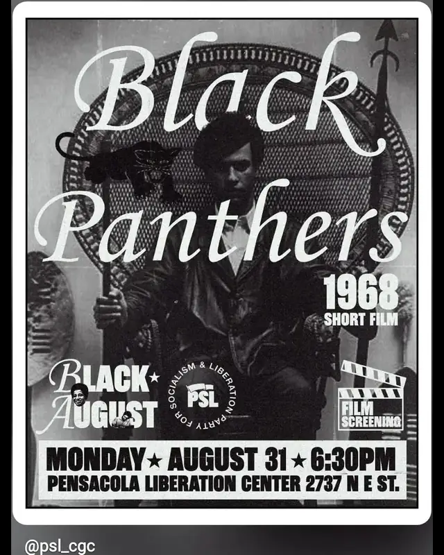

Aug 31, 2026 · black panthers 1968 film screeningflyer wall
Aug 28, 2026 · recreation art supply weekend popup Jun 25, 2026 · pensacola pride art build
Jun 25, 2026 · pensacola pride art build Jan 20, 2026 · average joey, stufy +2
Jan 20, 2026 · average joey, stufy +2 Jan 9, 2026 · dumpster meds, paul petrol +3
Jan 9, 2026 · dumpster meds, paul petrol +3 Feb 9, 2024 · a love for the people open mic
Feb 9, 2024 · a love for the people open mic
Jun 25, 2026 · pensacola pride art buildJan 20, 2026 · average joey, stufy +2Jan 9, 2026 · dumpster meds, paul petrol +3Feb 9, 2024 · a love for the people open micpast shows (6)
- 2026
- 31Aug 2026Black Panthers 1968 Film Screening
- 28Aug 2026Recreation Art Supply Weekend Popup
- 25Jun 2026Pensacola Pride Art Build
- 20Jan 2026Average Joey, Stufy, Outlook Bleak, Dentada
- 9Jan 2026Dumpster Meds, Paul Petrol, Steve Herwin, Sunflower Cigarettes, Sideswept Bangs
- 2024
- 9Feb 2024A Love For The People Open Mic